Hayashima, Okayama: things to do, food and stays
Hayashima · Okayama
Hayashima
Highlighted on the Okayama map.

Stay
岡山一棟貸し宿いぐさ
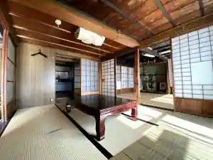
Okayama Hitomune Kashi Yado Igusa
Inn in Soshima, Hayashima with a renovated traditional house.
岡山ゲストハウスいぐさ
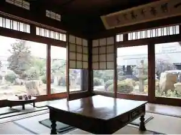
Okayama Guesthouse Igusa
Guesthouse in Maegata, Hayashima with a renovated traditional house.
Dining
焼肉みやび
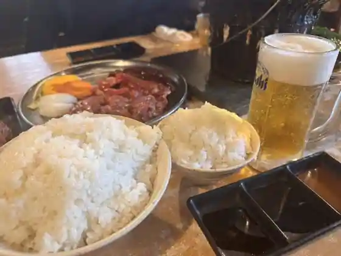
Yakiniku Miyabi
中華そば 近藤
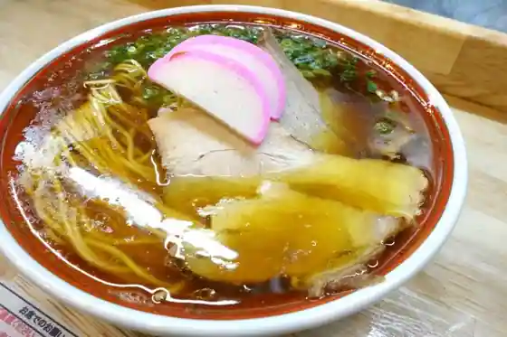
Chuka Soba Kondo
ラーメン成瀬家
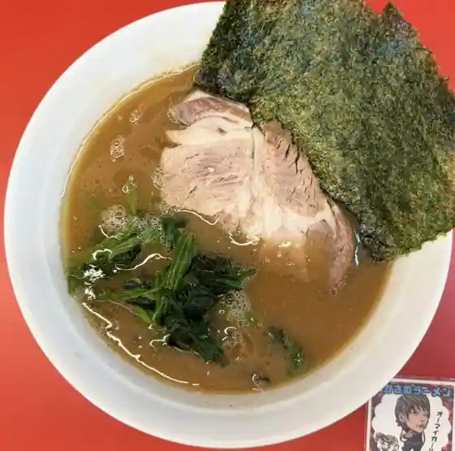
Ramen Naruse Ie
早島グリル&TUNAGU
So Shima Grill &TUNAGU
いかしの舎茶房
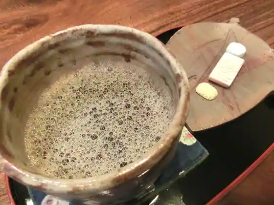
Ikashino Sha Sabo
髙橋食堂 将
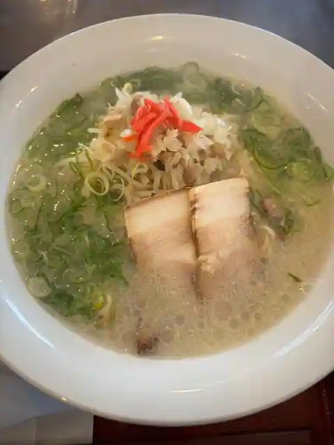
Shokudo Sho
ルーカス
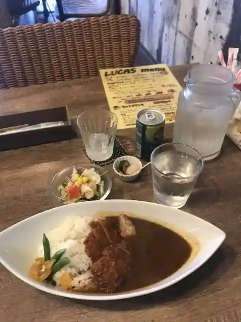
Rukasu
kiki
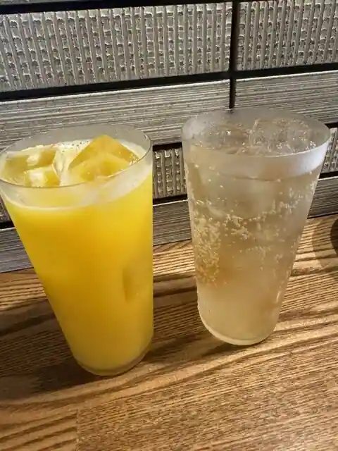
kiki
お好み焼き しゅう
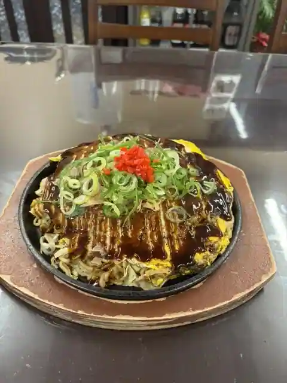
O Konomi Yaki Shu
Largo
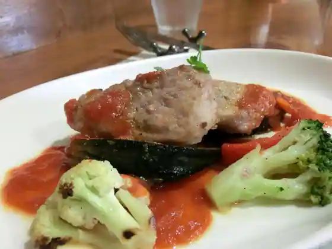
Largo
御菓子司 小池菓子舗
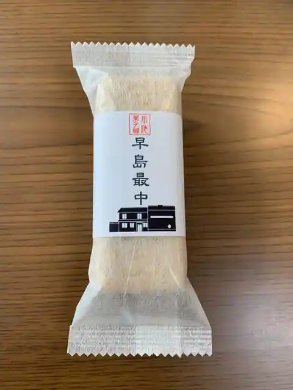
O Kashi Tsukasa Koike Kashi Ho
仁鶴
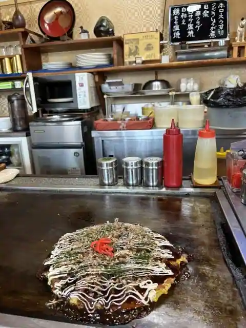
Nikaku
焼肉 清水
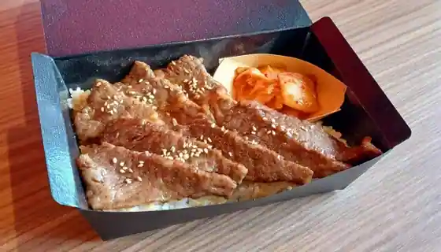
Yakiniku Shimizu
町の小さなパン屋さん momo
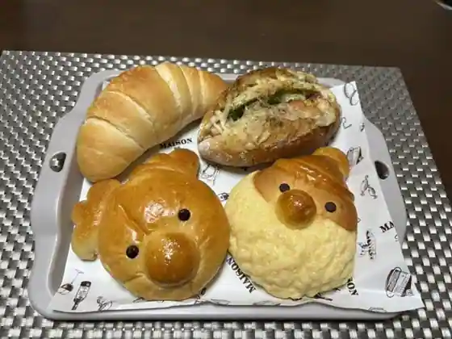
Machi No Chisa Na Bakery Ya San momo
KURASHIKI BREWING COMPANY
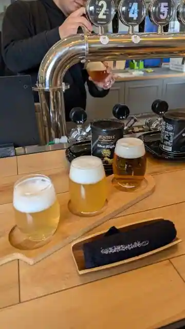
KURASHIKI BREWING COMPANY
早島町観光センター
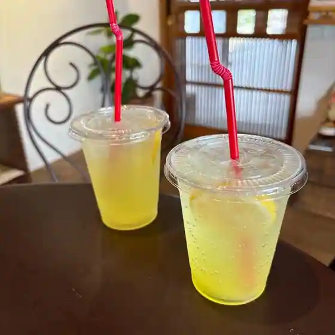
So Shima Machi Kanko Center
ロイヤルホスト 早島インター店
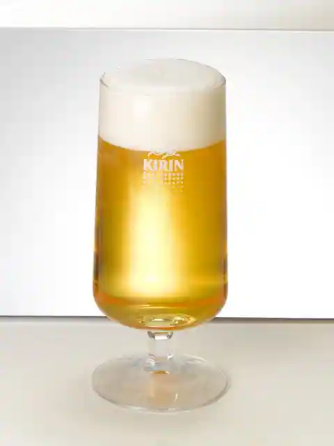
Roiyaruhosuto So Shima Inta
鰻の成瀬 岡山早島店
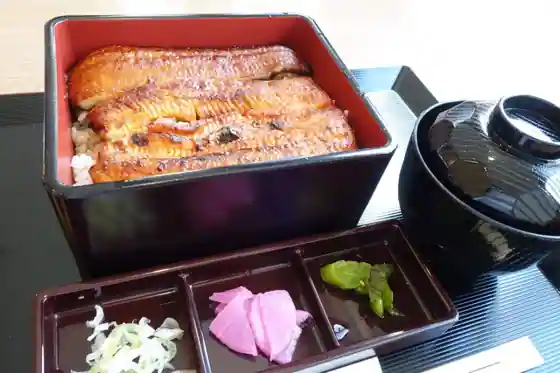
Unagi No Naruse Okayama So Shima
カフェ木音
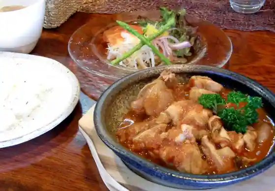
Cafe Ki Oto
大阪王将 早島インター店
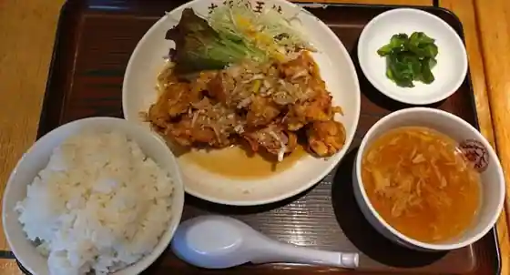
Osakaosho So Shima Inta
吉野家 ２号線早島店
Yoshinoya 2 Gosen So Shima
よるのむHayashima
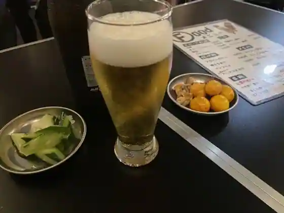
Yorunomu Hayashima
モスバーガー 早島インター店
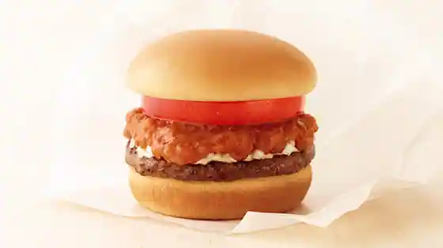
Mosu Burger So Shima Inta
Sights
Ikashi no Sha

Hayashima Kanko Center

Hayashima Park

Hayashima Fureai no Mori Park

Hayashima Hana Goza Teori Ri Densho Kan
Furo no Michi
Hayashima Folk History Museum
Tsurusaki Shrine
Togawa Ie Memorial Museum
Kuni Hoko Park
Hayashima Kanko Boranteiagaido no Kai